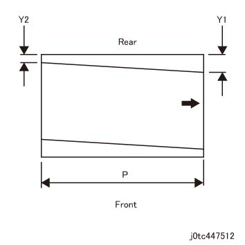
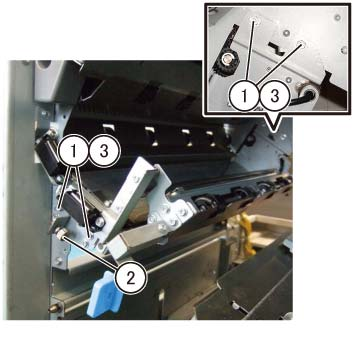
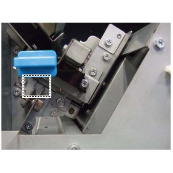

ADJ 47.20.1 裁切器 歪斜 调整 
目的
To change the NVM值 or 调整 裁切器 Regi 滑槽 组件 位置 和 正确的 the 供纸.

As 裁切器 歪斜 调整 is 已经 已执行 at the factory 在...之前 shipment, 执行 此 调整 仅 当...时 it 需要 取决于 the request.
[检查]
输出 a 裁切器 Job 和/与 以下 conditions.
纸张尺寸: A3
输出 数量 (纸张): 3
测量 cut 歪斜 数量 的 3 纸张.
测量 Y1 (引线/导向 边缘) 和 Y2 (trail 边缘) 的 3 纸张. (测量 at 裁切 waste 侧面)

(图 1) tc447512
Calculate the cut 歪斜 数量 的 3 纸张.
Cut 歪斜 数量 (mm) = Y1 (引线/导向 边缘) 宽度 (mm) - Y2 (trail 边缘) 宽度 (mm)
The 值 可以 positive (+) or negative (-).
Calculate the 平均值 cut 歪斜 数量 的 3 纸张.
如果 cut 歪斜 数量 不 meet the request, 执行 调整.
To 执行 [机械 调整], proceed to 步骤 5.
Calculate the cut 歪斜 数量 (converted 用于 200 mm).
测量 Y1 (引线/导向 边缘) 和 Y2 (trail 边缘). (测量 at 裁切 waste 侧面)
Calculate the 200mm equivalent 值 S.
S = 200 / P x (Y1 - Y2)
P: 420 mm 如果发生 A3
(图 2) tc447512
如果 cut 歪斜 数量 (converted 用于 200 mm) 不 meet the request, 执行 调整.
调整
[NVM 调整 方法]
Calculate the NVM additional 值 从 the 平均值 cut 歪斜 数量 的 3 纸张 该 已 calculated in 检查 步骤 2.
NVM additional 值 = (平均值 cut 歪斜 数量 的 3 纸张 / 0.0634)
加上 the NVM additional 值 该 已 calculated in 步骤 1 to 当前值 的 NVM.
NVM 列表
Weight
非涂布
Gloss
其他
[再生 (52 to 105 gsm),
Pre-printed (52 to 350 gsm), 等.]
52 ~ 63gsm
506-483
506-487
506-491
64 ~ 105gsm
506-480
506-484
506-488
106 ~ 220gsm
506-481
506-485
506-489
221 ~ 350gsm
506-482
506-486
506-490
The 默认值 of 每个 NVM is 128, 和/与 校正 范围 of +/-30
Sample 参考: 如果发生 非涂布 221 gsm 和/与 平均值 cut 歪斜 数量 of 1 mm
NVM additional 值 - (1 / 0.0634) = -15.772 -> round to nearest whole 号码: -16
加上 [-16] to 当前值 of NVM 506-482 (128 in 此 case).
128 - 16 = 112 -> 输入 [112] as the NVM值.
调整 直到 the requested cut 歪斜 数量 is achieved.
如果 requested cut 歪斜 数量 无法 be achieved by [NVM 调整 方法] alone, proceed to [机械 调整 方法].
[机械 调整 方法]
打开 the 前面 上方 盖板 组件 (PL 47.1)
拆卸 裁切器 Inner 盖板. (PL 47.1)
调整 裁切器 Regi 滑槽 组件 (PL 47.20) 位置.
松开螺钉 (x2) 该 固定 the 调整 支架 (PL 47.20) 和 the 螺钉（x2） 该 固定 裁切器 Regi 滑槽 组件.
转动 调整 螺钉 (PL 47.20) 和 调整 裁切器 Regi 滑槽 组件 位置.
Turning the 调整 螺钉 clockwise (CW) 移动 the 调整 支架 (PL 47.20) towards the 右侧. (调整 当...时 Y2 is 大)
Turning the 调整 螺钉 counterclockwise (CCW) 移动 the 调整 支架 towards the 左侧. (调整 当...时 Y1 is 大)
One scale marking: 1.0mm 歪斜 数量 (200 mm equivalent)
在...之后 the 调整, 拧紧螺钉 (x4).

(图 3) tcw447502
Scale 位置

(图 4) tcw447503
调整 直到 the requested cut 歪斜 数量 is achieved.